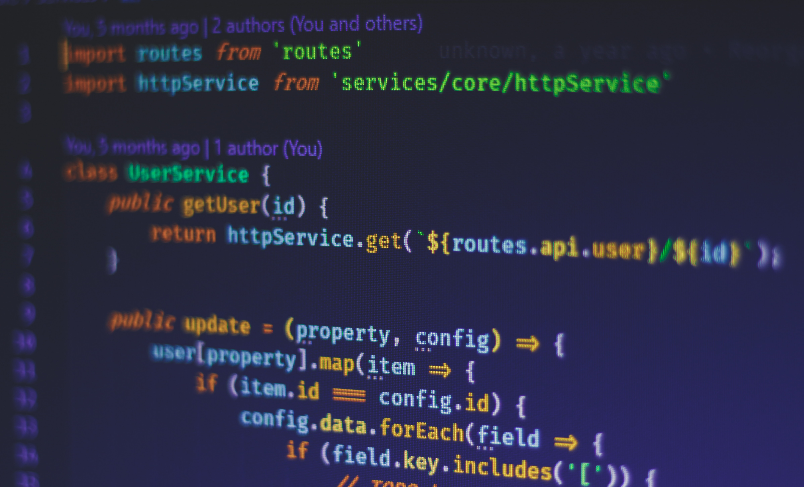
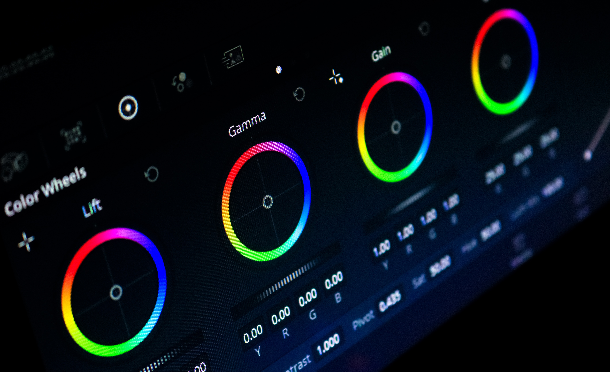

Frontend Development
Frontend Development Backend Development
Backend Development Graphic Design
Graphic DesignThe House of Terrian
Welcome to the House Of Terrian, where our mission is to ignite the journey of curious minds into the dynamic realm of the World Wide Web and its myriad components. Our bootcamp is designed to nurture cohorts from the very foundations, providing them with an immersive learning experience that covers every facet of the digital landscape. From coding languages to web design principles, from e-commerce intricacies to cybersecurity essentials, we empower our cohorts with comprehensive knowledge and hands-on skills. As they progress through our meticulously crafted courses, participants not only gain expertise but also a profound understanding of the digital ecosystem. Our commitment is to equip each cohort member with the prowess to not only thrive within the industry but also to make transformative contributions that shape its future. Join us, and let's embark on a transformative journey together at House Of Terrian.

|
 |  |

|
|---|---|---|---|
Frontend Development |
Backend Development |
Graphic Design |
UX/UI Design |
|
Unleash your potential in frontend development at House Of Terrian. Master HTML, CSS, and JavaScript to create captivating user experiences. Our expert-guided program equips you to shape responsive, interactive digital interfaces. Elevate your career with the skills needed to excel in the ever-evolving web industry. |
Dive into the world of backend development at House Of Terrian. From databases to server logic, our program hones your skills in crafting robust digital foundations. Explore languages like Python, Ruby, and more, guided by experts. Gain the expertise to power the web's core and drive innovation. |
Ignite your creative journey with House Of Terrian's Graphic Design program. Learn to visually communicate ideas using industry-standard tools and techniques. From typography to visual storytelling, our expert-led course empowers you to craft compelling designs for the digital age. Elevate your artistic passion into a dynamic career. |
Immerse yourself in the world of UI/UX with House Of Terrian. Our program delves into user-centric design, blending aesthetics and functionality. Learn wireframing, prototyping, and user research to create seamless digital experiences. Guided by experts, you'll master the skills to shape the future of user interaction. |